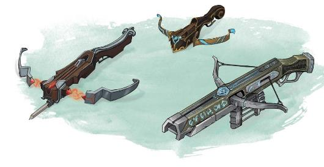

从盔甲到武器，许多一样的问题和需要考虑的事情也适用同一个答案。考虑到艾伯伦整体的先进程度，人们还在使用像弩这样的中世纪武器似乎很奇怪。虽然舞杖者很厉害，而且数量还在不断增加，但要成为一名舞杖者需要经过专门的训练，所以你不能只递给农民一根魔杖。在一个飞艇和战俑的世界里，为什么人们还没有创造出更有效的个人武器呢？
正如本章早些时候所讨论的，对于这个问题最简单的回答是，艾伯伦的武器并不是中世纪的——仅仅因为DND将一种武器称为弩并不意味着它与我们世界的中世纪的弩相同。请记住，虽然下面的章节主要介绍的是弩，但类似的概念也适用于任何远程或近战武器
当我们考虑适合艾伯伦的远程武器时，我们实际上在寻找一种任何人都能负担得起，可以在没有经过训练的情况下就可以使用的武器。虽然它应该比中世纪的弩更优秀，但它不需要与现代火器相匹配；总的来说，艾伯伦的发展水平应该更接近于19世纪晚期，而不是20世纪。
事实上，《玩家手册》中的轻弩已经比中世纪弩的设计效率更快了；中世纪弩的装填速度大约是每分钟2发，甚至1861年的春田步枪（美国南北战争中的一种常用的武器）每分钟也只能发射2到4发。相比之下，DND中的轻弩每分钟可以发射10发弩矢，其伤害足以让一个平民一箭毙命。因此，虽然它不是现代自动武器的对手，但轻弩与中世纪相去甚远。
如果你不喜欢弩的风格，你也可以把火药引入五国——这当然是易懂且枯燥的——这个选项将在本章后面讨论。但让我们首先需要考虑如何用一种适合艾伯伦的方式来描述弩（或任何武器），以及如何强调魔法而要技术的要素。
突出现代弩的效率的一种方法是让冒险者偶尔遇到设计更中世纪的武器。伽利法一世的士兵们所使用的是中世纪风格的弩，射程更有限，装填速度也很慢；今天所使用的高级弩是几个世纪工程技术的成果。同样地，达坎帝国和五国在使用非常高效的现代弩，但当离开到了拉扎尔的落后地区，或与食腐部落（The Carrion Tribes）战斗（译注：他们在恶魔荒原的阿什塔卡拉地区）时，冒险者们可能就会遇到较差的武器。你可以简单地通过描述武器的风格来表达这一点；或者如果你想从机制上表现这一点，也许重新装填这样的弩需要一个额外的动作，你不能在同一个回合中进行移动和重新装填。一个更受限的设计可能会反映出一种缓慢的装填机制，即要求玩家使用一个动作去重新装填而不是一个附赠动作，从而强调这种武器不如冒险者们所习惯的。
一些现代弩保持了与经典弩相同的总体设计——它们比任何中世纪的武器都要好。他们使用了我们世界上不存在的优越材料和技术，包括显能区域和炼金术的产物；例如，致木箭头可能更符合空气动力学，并且足够小，可以存储在一个一体化的箭筒中。同样，武器本身可能并不是魔法物品，但制造它们的工匠可能会受到魔力制造/魔法工艺magecraft戏法（来自《探秘艾伯伦》）的引导，并使用变化系的技术来提高他们的工作。事实上，轻弩可以在6秒内装填弩矢，没有力量属性需求或移动限制，这反映了卓越的工程技术。除了集成弹夹或刺刀等创新之外，像布鲁兰的“SAC-12”和达坎的“阿拉姆克朗Aram’kron”（译注：地精语，直译为“盛怒/正义的愤怒”+“六”，简称“怒六”）这样的轻型弩（详见“五国中的弩”）在外观上与经典弩大体相似。
弩不是一种魔法武器，但它仍然可以使用魔法的原理。在艾伯伦中，魔法是一门科学，这在奥术法术以外的许多方面都得到了体现。魔法可以产生动能——如果这些原理被用来给物质上的弩矢施加力，而不是产生一根纯作用力的弩矢，会怎么样呢？
想想卡尼斯家族生产的弩（详见“五国中的弩”）。卡尼斯弩的弩管（译注：即“枪管”）内部和箭头上都刻有奥术印记。当箭头离开弩管时，这些符号产生了一种奥术的相互作用——一种增加弩矢动能的公式。考虑到这一点，弩本身所能提供的唯一的力就是将箭头向下推进弩管的初始推力，这是一种触发奥术的相互作用的火花。装填卡尼斯弩的比中世纪弩要更容易，因为实际上卡尼斯弩本身比中世纪弩要更弱；而这种武器的威力不一定取决于弩弓的张力。
这也意味着卡尼斯弩看起来不像我们所习惯的弩。它更接近步枪——枪管越长，奥术的相互作用时间久越长。因此，电弧手弩（the Spark hand crossbow）的射程较短，而雷霆重弩（the Thunderbolt heavy crossbow）是最大和最长的武器。在这些弩中，“弩弓”是武器中相对较小的组成部分。在很多方面，这些武器类似于枪支，但它们的力量不是来自化学反应，而是一种奥术反应。
当使用这样的弩或其他远程武器时，没有什么可以阻止你描述它是通过奥术反应在空中推进弹药。请记住，这并不会改变弩的游戏机制；它不是一个魔法武器，所以它不会绕过伤害抗性，或被侦测魔法detect magic法术感测到。（如果你把一个次等附魔系法术的存在看作是合乎逻辑的结论，一个反魔法力场Antimagic Field法术理论上会抑制魔法反应，并使武器在那个区域失效——但是这个8环法术远远超出了科瓦雷的人们期望遇到的日常魔法效果，所以这不是弩制造商需要担心的事情。）
弩是五国的主流武器。尽管瑟雷恩士兵通常使用弓，到战争末期，安黛尔人开始大规模部署舞杖者，但弩仍然是常见的步兵武器。轻弩最受欢迎，因为它简单易用，而重弩则由精锐部队装备。在科瓦雷可以找到无数种弩的设计，但以下的设计脱颖而出。默认情况下，这些弩在战斗中都使用正常弩的数据，但如果你想显示进一步的创新，可以考虑应用“弩的提升”部分的一些改进。
布鲁兰长期以来以其工业基础而闻名。伽利法的士兵可能是在瑞肯马克（军事学院）受训的，但他们的武器是由“斯塔利拉斯克武器（Starilaskur
Arms）”生产的。在终末战争开始时，斯塔利拉斯克SAC-12是五国军队使用的标准轻弩；虽然现在每个国家都生产自己的武器，但它们仍然以经典的“麻袋（Sack）”（译注：指代SAC-12）为原型的。SAC-15——或者被称为“大麻袋（Big Sack）”是标准的重弩。在过去的十年里，坎纳斯一直在寻求用寇斯-埃图尔战术弩——KATC，或者称为“Cat-C（猫-C）”来改进SAC系列，但许多坎纳斯人仍然更喜欢标准的SAC。
译注：SAC，即Starilaskur Arms Crossbow，斯塔利拉斯克武器弩。现实中也有一款名为“SAC-46”的“飞龙”气枪，当年只制造了15把，现在成为了稀有的藏品。
在终末战争中，卡尼斯家族开创了“奥术科学”中提到的一系列弩——使用奥术相互作用来增加弩矢的力量，带有雕刻的印记的武器。该系列的标准武器是电弧the Spark（手弩），闪电the Lightning（轻弩）和雷霆the Thunderbolt（重弩）。在终末战争中，安黛尔和塞尔都大量使用了这些武器，而坎纳斯和布鲁兰则坚持使用更普通的SAC-12设计。（如下图所示）

安黛尔有着悠久的决斗历史。虽然法师圈的成员在决斗中使用魔法，但通道口哨是作为其他决斗者所用的替代品而开发的。虽然这种手弩已经在五国流传开来，但它仍通常与通路城（Passage）和决斗联系在一起。
译注：Pistol虽然有“手枪”的意思，但这里采用这个词的词源意思。
达坎后裔的标准弩设计紧凑，采用了优质合金和复杂的工艺。它的射击效率可与SAC-15相媲美，但封装更小、更精简。标准的阿拉姆克朗是一把带有可伸缩刺刀的重弩。轻弩在达坎后裔中很少见到，尽管寂静之民使用的是“萨尔卡（Sar’ka）”（译注：地精语，直译为“小”+“二”），这是一种拥有“弹容（4发）”属性的手弩。
一旦我们接受了弩作为一种正在积极发展的现代武器的想法，就有很多方法可以改进它。DM可以在游戏中考虑引入以下想法。
弩也可以是一种与时俱进的现代化武器，一旦接受这个设定，就有很多方法来进行改良。DM可以将下列方案引入主持的游戏中。
终末战争期间，各国军队都大量配备十字弩作为步兵武器。尽管刺刀不如肉搏专用的冷兵器那般趁手，但有了它，弩手们在敌人来到跟前时就不必抛下手里的弩了。
“刺刀”一栏中包含两种新武器，二者在五国各地都很容易买到。轻型刺刀是可以安装在轻弩上的简易武器，重型刺刀则是可以安装在重弩上的军用武器。所有刺刀均遵循下列规则：
使用刺刀 当刺刀未安装在对应的弩上时，你用该刺刀进行的攻击具有劣势。把一把刺刀安装在弩上，和从弩上卸下一把刺刀均花费一个动作。
刺刀
|
武器名字 |
花费 |
伤害 |
重量 |
属性 |
|
轻型刺刀 |
2gp |
1d6穿刺 |
1lb |
双手，特殊 |
|
重型刺刀 |
3gp |
1d8穿刺 |
1lb |
双手，特殊 |
相对于现实世界，5e版本常见的各种弩的射速实际上非常惊人。想证明这一点，描述你的弩配有弩匣就足够了（译者注：推测指的是配备了弩匣的连发十字弓，类似诸葛连弩）。假如你想表现更现代化的创新，你可以使用具有装弹特性的十字弩版本（参照dmg中的“枪械”部分），来替代常规的装填特性版本。
装弹：具有装弹属性的武器只能发出有限次的射击。弹药耗尽后，你必须以一个动作或一个附赠动作来重新装填弹药。
相据信，斯塔利拉斯克Starilaskur的军方已经为国王暗灯装备了装填6（译者注：怎么有种万智牌异能的感觉）的十字弩，另外，东卡尼斯也设计了一种装填15的雷鸣重弩Thunderbolt heavy
crossbow，目前这种重弩已经交付给坎纳斯的精锐部队进行测试。这些武器可以稍微提升pc们的输出火力，又不会特别破坏平衡，因此在决定pc获取这些武器的难度时无需顾虑太多。
幻术可以制造或消去声音，所以很容易就设想一种用于消除射击声和装弹声的配件。弩用消音器避免射击声传到一定距离外的人耳中，同时在战斗中让敌人更难定位隐匿的射手。
|
弩用消音器Crossbow Silencer 奇物，普通 以一个动作，你可以将这个魔法小管固定于十字弩的弩身，或者将其从弩身卸下。 当消音器安装于十字弩上时，任何用于聆听此弩的射击声所进行的感知（察觉）检定具有劣势。 此外，如果你正处于隐匿中，且使用了安装消音器的武器进行攻击检定，你可以启动消音器（无需动作）来继续保持隐匿状态，同时此次攻击不会暴露你的位置。一旦使用了此能力，10分钟内都无法再次使用。 |
终末战争将近结束时，卡尼斯家族发明了这种弩箭。法咒矢有点像一种魔法性的手榴弹。只有卡尼斯家族设计的十字弩，才能通过一套专门的动力学公式触发法咒矢内含的奥能，这样一来，弩手就能用法咒矢攻击并以储存的法术来影响特定的目标。就效果而言，法咒矢类似卷轴和药水——都是储存了单发法术的一次性魔法物品，但法咒矢的优势在于能够让法术在更远的距离生效。由于法咒矢是最近才有的新发明，目前卡尼斯家族只制作了能储存三环内法师法术的法咒矢。尽管法咒矢尚未在五国推广开来，它们的花费和稀有度都等同于记录了相同法术的卷轴。
|
法咒矢Spellbolts 弹药，普通（1环），非普通（2—3环） 法咒矢是一种储存有三环或更低环法师法术的弩矢。只有多数卡尼斯制式十字弩上所刻的特殊奥术印记才能触发法咒矢。法咒矢储存的法术必须具有距离，或施放时使用近战法术攻击，储存的法术距离不能为自身。 以一个动作，你可以给一把卡尼斯制式十字弩上膛一发法咒矢，并且施放其中储存的法术。用十字弩代替法术的所有成分，若你如此做，该法术的距离等于所用十字弩的射程，而非该法术通常的距离。替代任何法术攻击，你用十字弩对射程内的单个目标发动一次攻击。若命中，取代通常造成的武器伤害，对应法术的所有效应在该处生效。如果生效法术在法术攻击检定外需要豁免检定，则豁免dc为13。一旦储存的法术被施放，法咒矢就会毁灭，化作灰烬。 |
（译者注：有没有感觉这些玩意非常适合枪械？毕竟枪械才是真正的“与时俱进的现代化武器”嘛。如果各位dm准备开枪械的话，这些配件可以实现无缝衔接噢。）
当然，弩的创新很有趣，但真正的枪支呢？毕竟，如果某些东西存在于DND中，那么在艾伯伦中就有它的位置——而《城主指南》中也包含了枪械规则！
在开发艾伯伦的过程中，设计团队做出了一个有意的选择，这个世界上不包括基于火药的枪械。我们想将探索魔法作为一种科学形式，让人们找到在我们这个世界用世俗科学解决的问题的奥术解决方案。所以比起在五国的奥术创新之上添加火药，我们选择创造一个人们使用魔法进行远距离战斗的世界，无论是通过魔杖还是卡尼斯的动力学公式。但归根结底，这主要是一个语义和风格的选择。作为DM，如果你想使用《城主指南》中的枪械，这里有一些简单的方法。
火器没有理由一定要用火药。你可以使用枪械的数据，但描述它们是如何被卡尼斯的奥术公式所驱动的——也许SAC-12是一种轻弩，但卡尼斯雷霆（the Cannith Thunderbolt）是一种滑膛枪。或者你可以引入吉拉哥元素枪械，它使用被束缚的土元素来投射石头子弹，或者由一个被驾驭的作祟幽灵（poltergeist）驱动的艾伦诺枪械。（枪械）规则是一套武器的具体数据，但没有要求这些武器使用火药（并且值得注意的是，未来的枪械已经不需要）。
如果你想要有真正火药的枪械，但又不想让它们的存在影响五国的发展，你可以把这门科学交给一个遵循不同道路的孤立文化。我个人的选择是“雷火守护者”——一个专门从事炮兵的达坎氏族。这些工具可能是“雷火守护者”所独有的，也可能是所有达坎后裔所使用的。这可以凸显出达坎文化是一种先进的，走的道路与五国不同的文化，而武器上的差异可能会导致达坎和五国之间发生有趣的冲突。与此同时，如果玩家角色想要使用枪支，他们可以与“雷火守护者”或另一种与世隔绝且技术先进的文化有联系——一种罕见的选择是将枪械交给瑞依卓尔!
如果一个奇械师想要使用枪械，也许他们亲自开发了这些不为外界所知的独特武器。这个奇械师可能会使用火药，或者他们可能已经发展出了一个更非传统的，这个世界还不接受的原理——“我的梦魇枪是由梦驱动的，能够射出由纯粹的恐惧制成的子弹！”同样，《城主指南》中的枪械机械学只是一个基础；你决定这些规则在艾伯伦世界中的感觉。无论设计如何，这些武器都是需要不断维护的特殊原型；角色让它们继续工作的能力反映了他们非凡的技能。
边栏：枪械与平衡 Firearms and Balance
我个人更倾向于使用增强的弩，既能保持游戏的平衡性，又能让队伍的弩成为高级武器。如果你在DND游戏中引入了枪械，这里有一些平衡性考虑。 文艺复兴时期的枪械与《玩家手册》中的武器可以保持相对平衡；例如，滑膛枪造成的伤害比重弩要大，但射程却短得多。然而，现代武器和未来武器明显优于标准武器。现代狩猎步枪造成的伤害是重弩的两倍，而未来反物质步枪一枪造成的伤害相当于三环攻击性法术的伤害。 考虑到这一点，如果我在战役中加入枪械，那么只有文艺复兴时期的武器会被广泛使用。我会将现代武器视为非普通的魔法物品（尽管它们的伤害不会像魔法武器那样绕过伤害抗性），并将这些武器提供给艾伯伦中技术更先进的文化。也许艾伦诺的凯黛尔之刃（Cairdal Blades）拥有由星质（ectoplasm）驱动的武器，或者怨毒领地（The Venomous Demesne）的提夫林领主使用驾驭费尼亚的火焰的枪械。与此同时，威力惊人的未来武器将是闻所未闻的，并且作为一件极珍稀的魔法物品是难以获得的。 |